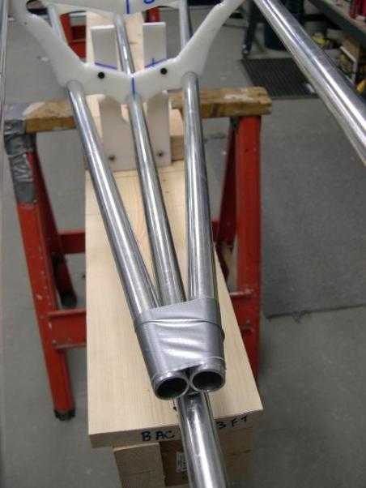

| Stringer (5 of 5) | Menu Last Page Next Page |
|  |
Trimming The ChinesThe long chine stringers overlap near the stems. This causes them to twist the frame. They must be trimmed to allow the frame to be aligned properly. Mark the chines, fore and aft, at the point they intersect. This is not the final trim location. On some designs, the gunwales must also be trimmed in the same way. |